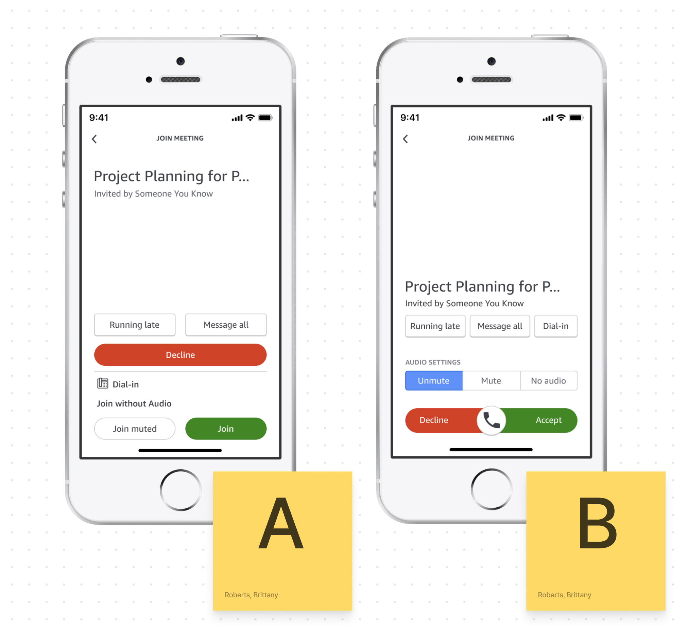

Amazon Chime Mobile
Meeting join flow redesign · UX team of 2
AWS · Fall 2021-Spring 2022
Background
In 2021 the Amazon Chime team completed a full redesign of our desktop and web clients to refresh UI, consolidate the codebase, and make sweeping accessibility improvements. Our mobile client redesign followed shortly after, with high level objectives to lean into native mobile patterns and make it easy for users to multitask while participating fully in meetings.
My role
Improve the UX for joining meetings on a mobile device, and update UI to match Chime's new desktop app appearance
Final design

Design Process
Review the new desktop experience — users click through a preview modal nicknamed the “green room”

This moment would require special consideration for mobile users — how might we streamline device setting selection and match the confidence users feel joining meetings from their desk at home?
Analyze metrics and context of use
Mobile users, in general
Mobile users on our platform
Pick the busiest intersection — where can we lower friction and reduce cognitive load?

All paths to join a meeting cross at the incoming call screen(s). My team aligned on this high impact juncture for UX improvements, scoping the work to fit into project timelines.
Design opportunities
• Match in-meeting audio settings for parity with desktop client
• Reduce taps/consolidate audio options on two screens
• Improve button hierarchy and information density
• Improve consistency across Android and iOS platforms
Place your bets — basic buttons, or a pattern with some personality?
At this phase, product leadership was moving in a bold new direction with the redesign. The in-meeting experience would feature a Clubhouse inspired layout with pixel art animal avatars for attendees.
A slider to join meetings would be in step with the creative vision, giving mobile-first whimsy, but some on the team thought it was over the top.
Stakeholder concerns
1. Do we need to include a "join without audio" setting?
2. Is the “swipe-to-answer” gesture accessible and user friendly?
Test with users — 2 prototypes, 4 Amazon employees, 50/50 iOS and Android owners
Learning objectives
• Which screen layout is most understandable at a glance?
• Which button layout is perceived as lower friction?
• Which design do testers prefer overall?
Research methods
• Semi structured interview to learn about mobile meeting habits
• Task success rate (join a meeting), think out loud protocol
• Feedback on static mockups, side-by-side A/B comparison
Key findings
Takeaway 1
3/4 testers preferred prototype A’s logical layout — they found it easy to compare audio settings and see which one is currently selected
Takeaway 2
4/4 testers preferred prototype B’s title placement — they liked keeping meeting information (title, organizer) separate from interactions
Unanswered questions
4% of mobile app users join without audio (~850k per month) — but why?
Testers correctly guessed what “join without audio” meant, but none had ever used the setting themselves. Chime’s Senior TPM supplied two use cases that are likely behind the above metrics:
Hybrid remote meeting etiquette
Multiple users sharing a conference room often need to join from personal devices to ensure everybody’s name appears on the roster — without triggering screechy audio feedback.
C suite security measures
Executive Assistants at Amazon often need to monitor meeting attendance — without overhearing classified conversations themselves.
Conclusion: Keep “join without audio” option to support these use cases
Testers were ambivalent about the slider — now what?
With no clear signal that a swipe to answer made or broke the UX, I consulted with subject matter experts on Amazon’s internal accessibility team and Chime mobile engineers:
Is the slider accessible? Technically yes
Swipe interactions alone are not accessible for people who navigate with a keyboard or gesture based screen reader.
However, engineers could program each side of the slider component to surface as a focusable region (right = answer, left = decline)… much like buttons.
Is the slider frugal? Technically no
Through a series of feedback sessions, it became clear that building a custom component would put engineers at risk of missing their deadline.
Buttons are more straightforward to implement, and could be styled quickly to match the new visual design.
Conclusion: Pivot to native button components for answer/decline
Final iteration
Project outcomes
Survey of 540 mobile beta testers — confirmed hits for redesign objectives, clear direction for continued improvement
Learning objectives
• Capture high level feedback on joining meetings from a mobile device
• Measure sentiment on the new join flow experience compared to the old one
Survey design
• 7 questions using a Likert scale to gauge perceived ease of use joining meetings
• 2 freeform questions to ask what respondents liked best about the experience and what they would change about the experience
Key findings
Majority prefer the new beta experience to the old one (91%)
Majority feel it takes very little effort to join meetings (91%)
Majority feel certain of their microphone status prior to meetings (75%)
There was ambivalence around perceived ease of use for picking an audio setting.
This could be due to survey question phrasing, or it could point to an opportunity for further improvement:
54% feel it is not difficult to pick their preferred audio setting prior to join
23% neither agree nor disagree that it is difficult
23% feel it is difficult to pick their preferred audio setting prior to join
Highest comment count for “favorite part” of the new experience was ease of use (69 mentions)
Next highest was the ability to see/set mute status prior to joining (34 mentions).
Highest counts for “one thing I’d change” were the ability to select a bluetooth device before joining (4 mentions) and ability to see who has already joined the meeting (4 mentions).
Raising the accessibility bar — type scaling and text labels were big wins for this release
My team passed Amazon's strict internal accessibility audit by ensuring every corner of the app was navigable for people who rely on assistive tech.
I owned post-audit bug triage, and partnered with mobile engineers to test and implement fixes screen by screen. We dove deep into best practices per platform, and documented everything we found along the way into a single source of truth for design and engineering.

Self reflection
This was my first shipped feature at Amazon! It was also my first collaboration with this cross functional team. Ambiguity was high. I learned (through trial, error, and observation) how to best keep teammates involved in design decisions.
Nuggets of wisdom
• Usability is good for more than design validation — it's also a valuable tool for addressing stakeholder concerns and driving alignment
• When usage data and user anecdotes differ, interview stakeholders — seek out experts in customer problems to bring clarity and authority to the conversation
• "The fidelity of the design should match the fidelity of the idea" (not my quote) — working through foundational problems in sketches and spreadsheets can be a tough sell for stakeholders who are expecting mockups, but I've since learned on other projects that it's worth starting slow so to avoid rework at the end